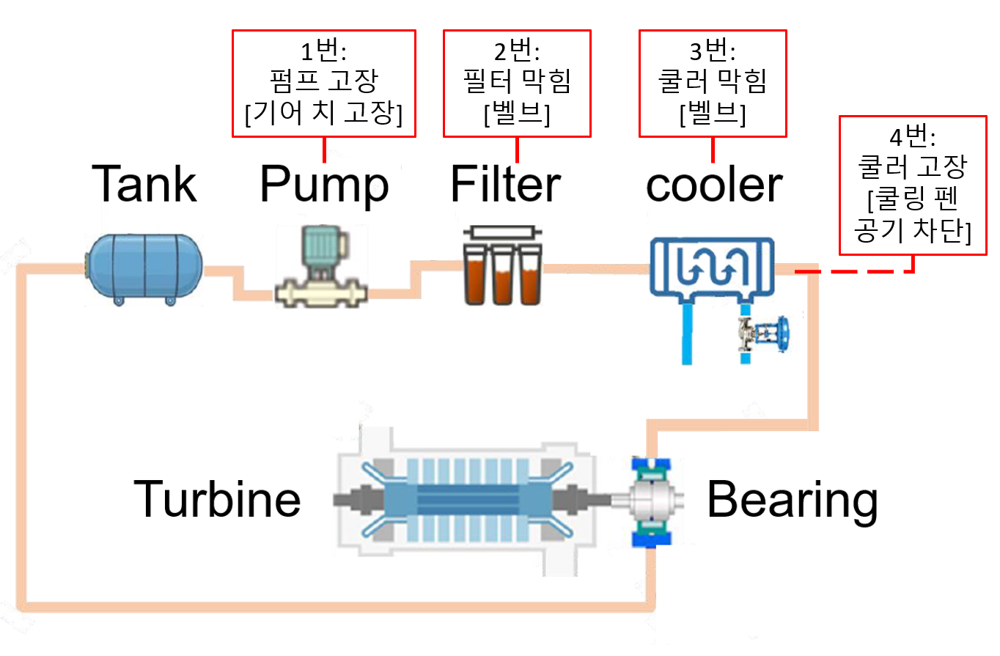
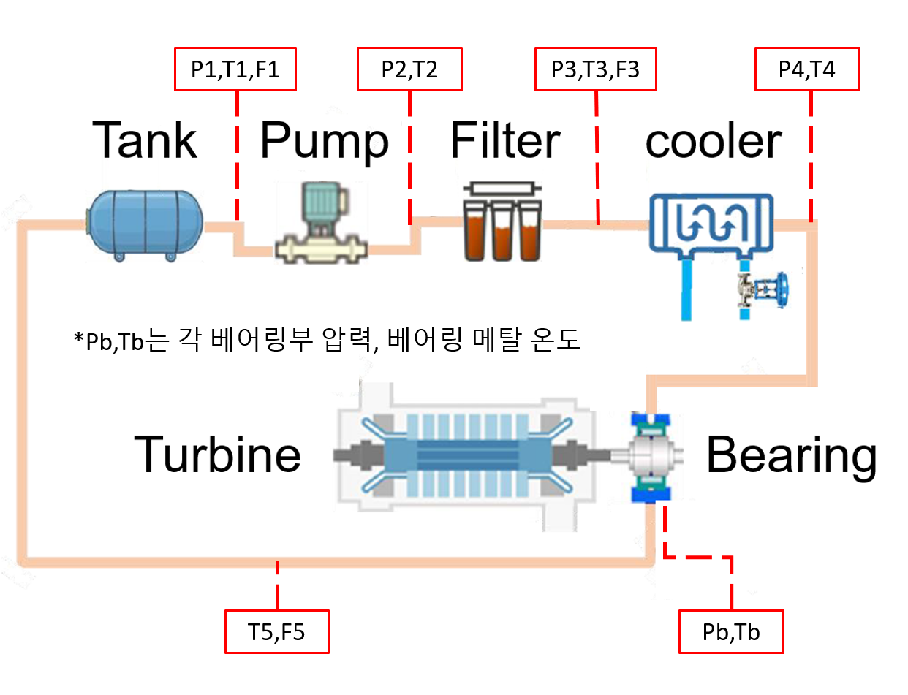

A.1 터빈발전기 윤활시스템 이상감지 및 건전성진단
터빈발전기 윤활시스템(turbine generator lubrication system, TGLS)은 저널베어링에 윤활유를 공급하여 회전축과 베어링 사이에 유막을 형성하고, 운전 중 발생하는 열을 제거하는 역할을 한다. 이러한 윤활과 냉각 기능이 원활하게 이루어지려면 공급되는 윤활유의 압력·유량·온도와 청정도가 적절하게 유지되어야 한다. 이를 위해 펌프는 필요한 압력과 유량을 제공하고, 필터와 쿨러는 각각 이물질 제거와 온도 조절을 담당한다. 이들 구성품의 결함은 윤활유의 공급 상태를 변화시켜 베어링의 윤활과 냉각에 영향을 미치므로, 구성품의 건전성을 진단하는 것은 터빈발전기의 안정적인 운전을 위해 중요하다.
윤활유는 오일탱크에서 펌프·필터·쿨러를 거쳐 베어링으로 공급되고, 윤활과 냉각을 마친 뒤 다시 탱크로 회수된다. 이 순환 경로를 따라 설치한 센서로 각 구성품 전후의 압력·유량·온도를 관찰하면 결함에 따른 거동의 변화를 파악할 수 있다. 여기에 베어링의 공급압력·메탈온도·진동을 함께 관찰하면, 구성품에서 발생한 문제가 윤활을 받는 베어링의 응답에 어떻게 나타나는지도 살펴볼 수 있다.
이러한 관계를 이용한 PHM을 구현하려면 정상뿐 아니라 여러 결함조건의 센서데이터가 필요하지만, 실제 발전설비에서 결함을 인가하여 데이터를 수집하기는 어렵다. 이에 그림 A.1의 시험장치에서 네 가지 구성품 결함을 서로 다른 수준으로 모사하고, 그 조합에 따라 센서신호를 수집하였다. 본 사례에서는 이 데이터를 대상으로 이상감지에서 출발하여 구성품별 정상·결함을 구분하는 이진진단과 결함수준을 구분하는 심각도진단으로 분석을 확장한다.

분석의 기본 접근은 교재의 ZeMA 유압시스템 사례와 연결된다. 여러 구성품의 결함이 센서신호에 미치는 영향을 학습하여 결함 여부와 심각도를 진단한다는 점이 같다. 또한 구성품의 결함과 그 영향을 받는 시스템 성능을 구분한다는 점에서는 웨이퍼 이송로봇 사례와도 유사하다. 여기서는 베어링의 응답을 시스템 성능과 관련된 관측량으로 삼는다. 다만 주어진 라벨은 윤활시스템 구성품의 결함수준이므로, 베어링 응답의 변화를 베어링 자체의 결함과 구분하여 해석해야 한다.
A.1.1 TGLS 데이터세트
시험장치와 고장모드
시험장치에 인가한 고장모드는 그림 A.2와 같이 펌프 고장, 필터 막힘, 쿨러 막힘, 쿨러 냉각 고장이다. 이 가운데 펌프 고장은 정상 펌프와 결함 펌프를 각각 설치하고 두 펌프를 전환하여 운전하는 방식으로 구현한다. 필터와 쿨러의 막힘은 밸브로 유로를 제한하여 모사하고, 쿨러 냉각 고장은 냉각팬의 공기 흐름을 차단하여 모사한다. 따라서 쿨러에 대해서는 윤활유가 흐르는 유로의 막힘과 냉각 기능의 저하를 별개의 고장모드로 다룬다.

이들 결함을 관찰하기 위한 센서의 위치는 그림 A.3과 같다. 센서는 관찰 목적에 따라 두 그룹으로 구분한다. 구성품 주변의 압력·온도·유량을 측정하는 12개 센서는 구성품의 거동과 전후 관계를 파악하는 데 사용하며, 베어링의 공급압력 Pb·메탈온도 Tb·진동 채널 Vib(그림에는 없음)는 구성품 결함의 영향을 받는 베어링 측 응답을 관찰하는 데 사용한다. 이 구분에 따라 구성품의 결함진단과 베어링 응답의 정상기준 대비 변화를 각각 평가한다.

데이터 파일과 라벨
측정신호와 결함라벨은 각각 data.mat와 code.mat에 저장되어 있다. data 변수는 17,400 × 15 × 81 크기의 배열로, 81개 시험조건 각각에서 표 A.1의 센서 15개로 수집한 17,400개 시간 샘플을 담고 있다. 이에 대응하는 code 변수는 81 × 4 배열로, 각 행에는 해당 시험조건에서 인가한 네 고장모드의 수준이 기록되어 있다. 이하에서 사용하는 조건 번호와 센서 번호는 MATLAB 및 데이터 설명자료와 동일하게 1부터 시작한다. 따라서 파이썬 배열의 인덱스로 지정할 때는 해당 번호에서 1을 뺀다.
code의 열 순서는 펌프, 필터 막힘, 쿨러 막힘, 쿨러 냉각 고장이며, 각 수준은 0=정상, 1=중간 결함, 2=심한 결함으로 정의한다. 참고로 원래 파일은 이 값이 역순으로 되어 있어 이를 결함이 심할수록 숫자가 커지도록 변환하였다. 이 정의에서 조건 28의 [0, 0, 0, 0]은 모두 정상, 조건 27의 [2, 2, 2, 2]는 모두 심한 결함에 해당한다. 네 구성품 고장모드에 세 수준을 조합하여 총 3⁴=81개 조건을 구성하였으며, 모두 정상인 조건의 시험기록은 하나만 있다.
표 A.1 data의 센서 순서
| 번호 | 채널 | 용도 |
|---|---|---|
| 1 | P1 | 펌프 입구 압력 |
| 2 | P2 | 펌프 출구 압력 |
| 3 | P3 | 필터 출구 및 쿨러 입구 압력 |
| 4 | P4 | 쿨러 출구 압력 |
| 5 | Pb | 베어링 공급압력 |
| 6 | T1 | 펌프 입구 온도 |
| 7 | T2 | 펌프 출구 온도 |
| 8 | T3 | 쿨러 입구 온도 |
| 9 | T4 | 쿨러 출구 온도 |
| 10 | T5 | 회수 경로 온도 |
| 11 | F1 | 펌프 입구 유량 |
| 12 | Tb | 베어링 메탈온도 |
| 13 | F3 | 필터 출구 및 쿨러 입구 유량 |
| 14 | F5 | 회수 경로 유량 |
| 15 | Vib | 베어링 진동 채널 |
표 A.1에 정리한 센서 가운데 P1–P4, T1–T5, F1·F3·F5는 구성품 그룹에, Pb·Tb·Vib는 베어링 응답 그룹에 속한다. 한 기록의 길이는 17,400개 샘플이며, 시험시간을 약 29분으로 보면 샘플링 주파수는 10 Hz에 해당한다.
정상과 결함 신호의 비교
데이터의 전반적인 특성을 살펴보기 위해 모두 정상인 조건 28과 모두 심한 결함인 조건 27을 비교한다. 그림 A.4는 구성품 센서를 압력·온도·유량으로 묶어 정상조건을 왼쪽에, 결함조건을 오른쪽에 배치한 것이다. 결함조건에서 P2–P4의 압력과 유량은 대체로 낮아지고 변동성은 현저히 증가하고 있다. 온도는 T4와 T5에서 상승하는 경향을 보이고 있다. 일부 온도는 기록 끝까지 변화하고 있어 정상상태 도달 전의 과도응답을 포함하는 것으로 보인다. 다만 이 기록 만으로 시험 종료 후의 수렴온도까지 예측할 수는 없으며, 여러 결함을 동시에 인가하였으므로 관찰된 변화 전체를 특정 구성품 하나의 영향으로 해석하기도 어렵다.

같은 두 조건의 베어링 응답을 비교한 그림 A.5에서는 결함조건의 공급압력 Pb가 정상조건의 약 1.2에서 0에 가까운 수준으로 낮아지고, 메탈온도 Tb는 시간에 따라 점진적으로 상승하는 과도응답을 보인다. 이는 구성품의 결함조건으로 인해 베어링이 받는 윤활·열적 조건도 달라진 것을 반영한다. 진동 채널의 변화는 압력이나 온도만큼 명확하지 않으며, 그 의미를 판단하려면 신호의 정의와 샘플링 정보를 확인하고 관련 특징을 계산해야 한다. 여기서 확인하는 것은 구성품 결함에 따른 베어링 응답의 변화이며, 베어링 자체의 결함 여부는 아니다.

시간창 분할과 입력 구성
본 사례에서는 운전 중 시간에 따른 신호의 변화를 살펴보기 위해, 한 시험에서 수집한 17,400개 샘플을 300개씩 겹침 없이 분할하여 58개의 시간창을 구성한다. 첫 시간창은 샘플 1–300, 둘째는 301–600이며, 마지막은 17,101–17,400이 된다. 10 Hz를 전제로 하면 시간창 하나의 길이는 30초가 된다. 이 길이는 실습을 위해 임의로 설정한 값으로, 대상 현상에 대한 최적값을 뜻하지는 않는다. 짧은 시간창은 변화 시점을 세밀하게 보여주는 대신 통계량의 변동이 커질 수 있고, 긴 시간창은 통계량을 안정시키는 대신 짧은 변화를 평균화할 수 있으므로, 이를 고려하여 정하는 것이 바람직하다.
동일한 분할을 모든 센서에 적용하면 데이터는 시간창 58개 × 시간 샘플 300개 × 센서 15개의 배열로 정리된다. 여기서 시간창이 58개라는 것은 한 기록 안에서 58개의 관측구간을 확보했다는 의미이다.
이렇게 나눈 시간창은 분석 방법에 따라 서로 다른 형태의 입력으로 변환한다. 다음 절에서 다룰 마할라노비스 거리 기반 이상감지에서는 각 시간창의 센서별 평균과 표준편차를 특징으로 사용한다. 따라서 센서가 12개인 구성품 그룹에서는 24차원, 센서가 3개인 베어링 응답 그룹에서는 6차원 특징벡터가 생성된다. 반면 오토인코더는 통계특징을 추출하지 않고 원신호, 즉 300 × 12 또는 300 × 3 배열을 입력한다. 뒤의 이진진단과 심각도진단에서는 구성품 센서의 통계특징에 차이신호와 물리 거동을 반영한 지표의 특징을 단계적으로 추가하여 24·32·44차원으로 특징벡터를 구성한다. 운전 전체에 대한 판정이 필요할 때는 이렇게 얻은 시간창별 결과를 모아 시험조건 단위의 결과로 집계한다.
A.1.2 이상감지
본 절에서는 정상 운전에서 관찰한 신호를 기준으로, 다른 시험조건의 신호가 얼마나 벗어나는지를 평가한다. 구성품 그룹에서는 압력·온도·유량 센서신호의 변화를, 베어링 응답 그룹에서는 공급압력·메탈온도·진동의 변화를 각각 이상점수로 나타낸다. 이때 구성품의 변화가 베어링으로 전달되는 양상이 다를 수 있으므로 두 그룹의 점수나 임계값 초과 시점이 반드시 일치할 필요는 없다.
정상기준을 구축하는 데 사용할 수 있는 자료는 모든 구성품이 정상인 조건 28의 시험기록 하나뿐이므로, 이 기록에서 나눈 58개 시간창을 기준 추정과 모델 학습에 사용한다. 그러나 이들 시간창은 동일한 운전에서 수집한 자료로, 여러 정상 운전에서 나타날 수 있는 변동을 반영한 것이 아니다. 따라서 이후의 이상감지 결과는 제한된 정상자료로 구축한 기준에 대한 평가라는 점을 고려하여 해석해야 한다. 이러한 조건에서 마할라노비스 거리와 오토인코더로 정상기준을 각각 구축하고, 나머지 80개 구성품 결함조건의 신호가 이 기준에서 벗어나는지 확인한다.
마할라노비스 거리 기반 이상감지
교재 4.3절의 마할라노비스 거리(Mahalanobis Distance, MD)는 관측벡터가 정상 평균에서 벗어난 정도를 특징 간 공분산까지 고려하여 나타내는 지표이다. 여기서는 시간창별 평균·표준편차를 관측벡터로 사용한다. 정상기록에서 얻은 관측벡터의 수는 시간창 수와 같은 n=58이며, 벡터 차원 p는 구성품 그룹에서 12 × 2=24, 베어링 응답 그룹에서 3 × 2=6이다. 따라서 구성품의 정상 평균과 공분산은 58 × 24의 특징행렬로 추정한다. 한 시간창의 300개 원신호 샘플은 특징을 계산하는 데 사용되고, 이렇게 얻은 58개 특징벡터가 정상기준을 추정하는 자료가 된다.
각 센서에서 추출한 평균과 표준편차 특징은 단위와 크기가 서로 다르므로, 58개 시간창을 기준으로 표준화한다. 예를 들어 한 센서의 평균 특징은 58개 평균값의 평균을 빼고 그 표준편차로 나누며, 표준편차 특징도 58개 표준편차 값에 같은 절차를 적용한다. 코드에서는 이러한 z변환을 StandardScaler로 수행한다. 이를 통해 압력의 평균이나 온도의 표준편차처럼 척도가 다른 특징들을 표준화된 좌표에서 다룰 수 있다.
변환한 관측벡터를 z, 정상 평균을 μ라 하면 마할라노비스 거리 D(z)는 식 (A.1)과 같다. 이후 다른 조건을 평가할 때도 정상자료에서 구한 표준화 기준과 평균·공분산을 고정하여 사용한다.
(A.1)
(A.2)
공분산의 추정에는 식 (A.2)의 축소 방법을 적용한다. 특징 간 상관이 강하거나 관측자료가 적으면 경험적 공분산행렬 S의 역행렬이 불안정해져, 작은 변동에도 MD가 지나치게 커질 수 있다. 이를 완화하기 위해 S를 모든 대각 성분이 τ인 행렬 와 가중평균한다. 여기서 는 단위행렬이고 τ는 S의 대각 성분 평균이다.
축소 공분산은 Ledoit–Wolf 방법으로 추정하며, 코드에서는 LedoitWolf를 사용한다. 축소계수 λ는 S와 의 혼합비율로, 0이면 S를 그대로 사용하고 값이 커질수록 τI의 비중이 높아진다. 정상자료에서 추정한 λ는 구성품 그룹에서 0.077, 베어링 응답 그룹에서 0.321이었다. 예를 들어 λ=0.077이면 S에 92.3%, τI에 7.7%의 가중치를 부여한다.
이상감지 임계값은 특정 확률분포를 가정하지 않고, 정상 58개 거리의 경험적 95백분위수로 설정하였다. 동일한 시험기록에서 나눈 시간창들은 서로 상관될 수 있고 공분산에도 축소 추정을 적용하였으므로, 독립 정규표본과 일반 표본공분산을 전제로 하는 통상의 F분포 또는 카이제곱분포 기반 임계값을 그대로 적용하기 어렵기 때문이다.
이렇게 구축한 MD 방법을 새 조건에 적용할 때는 각 시간창에서 구한 24개 또는 6개 특징을 정상기준으로 표준화하고, 식 (A.1)로 거리 하나를 계산한다. 이를 58개 시간창에 적용하면 58개의 거리값을 얻으며 이를 정상조건에 적용한 결과를 그림 A.6의 좌측에 임계값과 함께 나타내었다. 여기서 위, 아래는 구성품 그룹과 베어링 그룹의 결과를 나타낸다. 정상기록 중 일부 점수가 임계값을 넘는 것은 그 점수들의 95백분위수를 기준으로 삼았기 때문이며, 독립적으로 수집한 정상시험에서 오경보가 발생한 결과로 해석해서는 안 된다.

표 A.2 마할라노비스 거리의 실행결과
| 센서 그룹 | 특징 수 | 축소계수 | 거리 임계값 | 결함조건의 초과 시간창 수 |
|---|---|---|---|---|
| 구성품 | 24 | 0.077 | 5.429 | 4,640 / 4,640 |
| 베어링 응답 | 6 | 0.321 | 3.148 | 4,640 / 4,640 |
결함조건의 이상감지 수행 결과는 그림 A.6 오른쪽의 임계값 초과비율로 요약하였다. 한 조건의 58개 시간창 중 임계값을 넘은 수를 58로 나눈 값이므로, 1이면 모든 시간창에서 정상기준을 초과한 것이다. 정상조건 28은 표시 대상에서 제외하여 해당 위치가 비어 있다. 표 A.2에서 보듯 두 그룹 모두 나머지 80조건의 4,640개 시간창에서 임계값을 초과하였다. 따라서 이 데이터에서는 구성품 결함조건의 구성품 신호뿐 아니라 베어링 응답도 정상기준과 구별되었다.
오토인코더 기반 이상감지
통계특징으로 신호를 요약하는 MD와 달리, 오토인코더는 정상신호의 형태를 재구성하도록 학습하고 그 재구성 오차로 이상을 평가한다. 이를 위해 교재 4.5.2절의 ZeMA 사례와 같은 형태의 1차원 합성곱 오토인코더를 사용한다. 구성품과 베어링 응답 모델은 각각 300 × 12, 300 × 3의 원신호 배열을 입력받아 학습한다. 입력 전에는 센서마다 정상기록 전체 17,400개 값에서 구한 평균·표준편차로 신호를 표준화하여 크기를 맞춘다. 다른 조건에도 이 기준을 고정하여 적용하므로 결함에 따른 신호 수준의 변화가 입력에 유지된다.
표 A.3 합성곱 오토인코더의 구조
| 단계 | 계층 | 출력 크기 (시간 × 채널) |
|---|---|---|
| 1 | Conv1D: 필터 8개, 커널 7, 보폭 2, ReLU | 150 × 8 |
| 2 | Dropout: 제외 확률 0.2 | 150 × 8 |
| 3 | Conv1D: 필터 16개, 커널 7, 보폭 2, ReLU | 75 × 16 |
| 4 | Conv1DTranspose: 필터 8개, 커널 8, 보폭 2, ReLU | 150 × 8 |
| 5 | Dropout: 제외 확률 0.2 | 150 × 8 |
| 6 | Conv1DTranspose: 필터 C개, 커널 8, 보폭 2, 선형 출력 | 300 × C |
표 A.3의 부호화 과정에서는 합성곱을 통해 시간축 길이를 300에서 150, 다시 75로 줄이면서 신호의 패턴을 표현한다. 이어지는 복호화 과정에서는 전치 합성곱으로 길이를 300으로 복원하여 C개 센서의 재구성신호를 출력한다. 입력과 출력을 일치시키는 방향으로 가중치를 학습함으로써 정상신호의 관계와 패턴을 재현하도록 하는 구조이다. 학습 중에는 일부 활성값을 확률 0.2로 제외하는 Dropout을 적용하며, 학습된 모델로 신호를 재구성할 때는 이를 해제한다.
입력과 출력 사이의 평균제곱오차(MSE)를 손실로 두고 Adam으로 가중치를 학습한다. 학습률은 0.001, 배치 크기는 32, 최대 학습은 120에포크로 설정하였다. 본 사례에서는 별도의 검증데이터가 없으므로 학습손실이 15에포크 동안 개선되지 않으면 종료하고, 가장 작은 학습손실을 얻은 가중치를 이용하여 신호를 복원한다. 그림 A.7에서 보듯 두 모델의 학습손실은 전반적으로 감소하였으며 최대 120에포크까지 학습한 결과 구성품 및 베어링 모델 각각 학습손실이 가장 작았던 에포크는 118, 119로 나타났다.

표 A.4 오토인코더의 학습결과와 RMSE 임계값
| 그룹 | 최적 에포크 | 최적 학습손실 | RMSE 임계값 |
|---|---|---|---|
| 구성품 | 118 | 0.417 | 0.604 |
| 베어링 응답 | 119 | 0.359 | 0.554 |
학습을 마친 모델에 각 시험조건을 입력하여 재구성신호를 구한 뒤, 식 (A.3)의 RMSE를 이상점수로 사용한다. 시간창 하나에 포함된 300개 시점과 C개 센서의 오차를 모두 제곱평균하고 제곱근을 취하므로, 한 시간창에서 점수 하나가 나온다. 따라서 한 시험기록의 결과는 특정 센서의 점수가 아닌 해당 그룹 전체에 대한 58개의 재구성 오차로 표현된다.
(A.3)
식에서 w는 시간창, t는 시간창 내부의 시점, c는 센서 번호이며, e는 표준화한 입력과 재구성값의 차이이다. 센서 수 C는 구성품 모델에서 12, 베어링 응답 모델에서 3이다. 센서별로 표준화한 좌표에서 오차를 합산하므로 서로 다른 물리 단위를 직접 더하는 문제를 피할 수 있다. 이 점수의 임계값도 정상 58개 RMSE의 경험적 95백분위수로 정하며, 구성품과 베어링 응답 모델에서 각각 0.604와 0.554를 얻었다.
표 A.4의 학습손실과 RMSE 임계값은 계산 과정이 서로 다르다는 점에 유의해야 한다. 학습손실은 Dropout을 적용하고 가중치를 갱신하는 동안 배치별 MSE를 집계한 값인 반면, 이상점수는 최종적으로 구한 가중치로 Dropout 없이 새로 계산한 시간창별 RMSE이다.
그림 A.8은 정상 시간창의 RMSE와 결함조건별 임계값 초과비율을 보여준다. 구성품 모델에서는 80개 결함조건의 시간창 4,640개가 모두 임계값을 초과하였다. 베어링 응답 모델에서는 조건 1의 한 시간창을 제외하고 모두 초과하여, 조건 1의 초과비율은 57/58이고 나머지는 1이다. 따라서 구성품 결함조건에서 베어링 응답도 대부분 정상기준과 차이를 보였다고 해석할 수 있다.

이렇게 구축한 오토인코더를 이용하면 원신호를 재구성, 즉 복원할 수 있는데, 이를 정상조건 28과 모두 심한 결함조건 27에 대해 구성품 센서 T4와 베어링 센서 Tb를 예로 하여 그림 A.9에 보였다. 각 시간창을 개별적으로 재구성한 뒤 시간순으로 이어 붙였으므로 가로축은 전체 17,400개 샘플에 이른다. 정상조건에서는 비교적 원신호와 재구성신호가 비교적 일치하는 반면 결함조건에서는 큰 차이를 보인다.

그림 A.10에서는 쿨러 냉각 기능에 중간 수준 결함만 인가한 조건 1=[0, 0, 0, 1]을 살펴본다. 왼쪽 그림은 센서 그룹 전체에 대한 시간창별 RMSE 58개를 시간순으로 연결한 것이다. 그림 A.8 왼쪽의 정상조건과 비교하면, 거의 모든 시간창에서 이상점수 값이 임계값을 초과한다. 또한 두 그룹 모두 시간에 따라 점수가 증가하고 있으며, 이는 냉각 기능 저하에 따른 온도 상승 등의 과도응답으로 해석할 수 있다.
한편 그룹 전체의 점수만으로는 어느 센서에서 차이가 큰지 알기 어려우므로, 같은 조건의 오차를 센서별로도 집계한다. 그림 A.10 오른쪽의 막대는 식 (A.4)와 같이 센서 하나에 대해 58개 시간창의 300개 시점, 즉 17,400개 오차를 모두 모아 계산한 RMSE이다. 이는 운전 전체에서 해당 센서를 얼마나 잘 재구성했는지 나타낸다.
(A.4)
본 조건에서는 구성품 그룹의 T4·T5와 베어링 응답 그룹의 Tb에서 큰 재구성 오차가 나타난다. 이는 냉각 기능 저하로 온도 응답이 정상조건과 달라지면서, 정상신호로 학습한 모델의 재구성 오차가 커진 것으로 해석할 수 있다.

A.1.3 이진분류 기반 건전성진단
앞 절에서 정상기준과의 차이를 감지하였다면, 이제는 그 차이를 유발한 구성품의 결함 여부를 구분한다. 이를 위해 81개 시험조건의 구성품 센서데이터와 결함라벨을 이용하여 지도학습 기반의 이진진단을 수행한다. 모델은 교재 5.3.5절의 ZeMA 사례와 같이 은닉노드 10개와 sigmoid 출력노드 4개를 갖는 인공신경망(ANN)으로 구성한다. 입력 특징은 TGLS에 맞추어 변경하되 네 고장모드의 결함확률을 함께 출력하는 기본 구조는 유지한다.
이진진단용 라벨은 정상 0을 유지하고 중간 결함 1과 심한 결함 2를 결함 1로 합쳐 구성한다. 여러 구성품에 동시에 결함이 존재할 수 있으므로, 모델은 네 클래스 중 하나를 선택하는 것이 아니고 구성품별로 정상·결함을 예측한다. 이러한 다중라벨 분류에는 구성품 센서 12개에서 얻은 특징을 사용하며, 베어링 응답 센서 Pb·Tb·Vib는 포함하지 않는다.
세 가지 특징 구성
입력 특징이 진단성능에 미치는 영향을 살펴보기 위해 세 단계로 나누어 특징을 구성한다. 먼저 원센서의 통계특징 만으로 24차원을 구성하고, 구성품 전후의 센서 차이신호를 더하여 32차원으로 확장한 다음, 유량과의 관계를 반영한 물리 지표까지 포함하여 44차원을 구성한다. 이 세 구성은 뒤의 심각도진단에도 공통으로 적용하므로, 진단 목적에 따라 추가 특징의 효과가 어떻게 달라지는지 함께 살펴볼 수 있다.
기본 24차원은 12개 센서 각각의 시간창 내 평균과 표준편차로 이루어진다. 여기에 표 A.5의 차이신호 네 개에서 구한 평균·표준편차 8개를 더하면 32차원이 된다. 펌프 전후의 압력상승, 필터와 쿨러의 압력손실, 쿨러의 온도 감소를 직접 입력함으로써 개별 센서값에 더하여 구성품 전후의 관계를 모델에 제공하는 것이다.
표 A.5 구성품 전후의 차이신호
| 차이신호 | 식 | 의미 |
|---|---|---|
| 펌프 압력상승 | P2 − P1 | 펌프 전후의 압력 변화 |
| 필터 차압 | P2 − P3 | 필터 전후의 압력손실 |
| 쿨러 차압 | P3 − P4 | 쿨러 전후의 압력손실 |
| 쿨러 온도차 | T3 − T4 | 냉각 전후 온도 감소 |
차이신호는 구성품 전후의 변화를 표현하지만, 그 크기는 결함뿐 아니라 운전 중의 유량에도 영향을 받는다. 예를 들어 같은 막힘 정도에서도 유량이 달라지면 압력손실이 달라질 수 있으므로, 표 A.6과 같이 차압을 유량 또는 유량 제곱으로 나눈 값을 저항과 관련된 지표로 사용한다. 유량과 압력상승의 곱은 유체동력, 유량과 온도차의 곱은 열수송과 관련된 지표로 추가한다. 이들 여섯 지표의 평균·표준편차 12개를 32차원에 더한 것이 44차원 구성이다. 물리 거동을 반영하기 위한 대리 지표이므로, 단위 변환과 유체 물성을 반영한 엄밀한 동력·열량이나 무차원수로 해석하지는 않는다.
표 A.6 물리 거동을 반영한 추가 지표
| 지표 | 식 | 사용 유량 |
|---|---|---|
| 펌프 동력 관련 | F1(P2 − P1) | F1 |
| 필터 선형 저항 관련 | (P2 − P3)/Q | Q=max(F3, ε) |
| 필터 유량제곱 저항 관련 | (P2 − P3)/Q² | Q=max(F3, ε) |
| 쿨러 선형 저항 관련 | (P3 − P4)/Q | Q=max(F3, ε) |
| 쿨러 유량제곱 저항 관련 | (P3 − P4)/Q² | Q=max(F3, ε) |
| 냉각 열수송 관련 | F3(T3 − T4) | F3 |
이와 같이 특징을 단계적으로 추가하면 한 시험조건의 특징 배열은 각각 58 × 24, 58 × 32, 58 × 44가 된다. 노트북에서는 FEATURE_MODE 변수로 특징 차원을 지정하고 특징 준비 셀을 실행한 뒤, 동일한 특징 구성으로 이진진단과 심각도진단을 차례로 수행한다. 다른 차원의 결과를 비교하려면 FEATURE_MODE 값을 변경하고 특징 준비부터 각 진단의 학습·평가까지 같은 순서로 다시 실행한다. 동일 실행 세션에서는 각 특징 구성의 결과가 비교표에 누적되어 성능을 비교할 수 있다.
참고로 추가 특징은 시간창의 평균값끼리 연산하여 만들지 않고, 매 시점에서 차이·곱·비율 신호를 먼저 계산한 뒤 시간창별 평균과 표준편차를 구한다. 예를 들어 필터 지표의 평균은 300개 시점의 (P2−P3)/Q를 평균한 값으로, 평균 차압을 평균 유량으로 나눈 값과 일반적으로 다르다. 차이신호의 표준편차 역시 두 센서 표준편차의 차이로 계산할 수 없다. 한편 차압과 온도차 자체는 32차원 구성에 한 번만 포함하고, 44차원에서 더하는 것은 유량과의 곱·비율이다. 같은 특징을 중복해서 넣는 것은 아니지만 기존 특징과의 상관은 남을 수 있다.
유량으로 나누는 지표에서는 작은 분모 때문에 값이 과도하게 커지는 것을 방지해야 한다. 이를 위해 Q=max(F3, ε)를 사용하고, ε는 학습 집합의 양수 F3 중앙값의 1%와 10⁻⁸ 중 큰 값으로 정하였다. 저장된 실행에서 ε는 약 0.005였고 하한 적용 비율은 소수 셋째 자리까지 0.000으로 표시되었다. 하한은 네 저항 지표의 분모에만 적용하며, 동력·열수송 관련 곱 지표에는 원래 유량 F1·F3를 사용한다.
시험조건 단위 분할과 ANN 학습
학습·검증·시험의 분할은 시험조건 단위로 수행한다. 이를 위해 81개 조건 중 30%를 시험에, 나머지 중 20%를 검증에 배정하여 학습 44개·검증 12개·시험 25개 조건으로 나누었다. 각 집합 마다 시간창을 펼치면 각각 2,552·696·1,450개의 입력이 된다. 난수 시드는 42로 고정하고 세 특징 구성에 같은 조건 분할을 사용하여 비교의 기준을 맞춘다.
ZeMA 사례에서는 정상·결함의 라벨 조합별 비율이 학습·검증·시험 집합에 비슷하게 유지되도록 층화 분할하였다. TGLS에서도 조건 구성을 균형 있게 배분하되, 모두 정상인 시험조건이 하나뿐이므로 이를 별도 그룹으로 나누기 어려웠다. 이에 분할할 때는 결함 구성품이 0개 또는 1개인 조건을 한 그룹으로 묶고, 나머지는 2개·3개·4개인 그룹으로 구분하여 각 그룹의 비율을 유지하였다. 실제 진단라벨은 그대로 사용하였으며, 최종적으로 학습 44개, 검증 12개, 시험 25개 조건으로 구성하였다.
분할 후에는 학습 집합에서 구한 평균·표준편차로 특징을 표준화하고, 같은 변환을 검증·시험 집합에 적용한다. 표준화한 d차원 입력은 10개 ReLU 은닉노드를 거쳐 네 sigmoid 출력으로 연결되므로 모델 구조는 d → 10 ReLU → 4 sigmoid이며, d는 24·32·44 중 하나이다. 각 출력은 해당 구성품의 결함확률을 나타내고 여러 결함이 동시에 존재할 수 있으므로 네 출력의 합을 1로 제한하지 않는다. 학습에는 이진 교차엔트로피 손실과 Adam을 사용하며 학습률 0.01, 배치 크기 32, 최대 1,000에포크로 설정한다. 검증손실이 30에포크 동안 개선되지 않으면 종료하고 최저 검증손실의 가중치를 이용하여 모델을 구축한다.
그림 A.11은 가장 많은 특징을 적용한 44차원 모델의 학습 과정을 보여준다. 파라미터 수는 494개이며 37에포크까지 학습한 뒤 검증손실이 가장 작았던 7번째 에포크의 가중치를 복원하였다. 해당 시점의 학습손실은 0.016, 검증손실은 0.090이다.

시간창 판정과 시험조건 판정
학습된 모델은 시간창마다 구성품별 결함확률을 출력하며, 0.5 이상을 결함으로 판정한다. 운전 전체를 평가할 때는 식 (A.5)와 같이 구성품 j에 대한 시간창 w의 확률을 58개 시간창에 걸쳐 평균한 후 같은 기준 0.5를 적용한다. 이 방식은 확률의 크기를 유지하면서 한 시험조건의 전반적인 응답을 요약한다. 이 방법은 한 시간창이라도 결함이면 전체를 결함으로 판정하는 것과 다르고, 시간창별 0·1 결과의 단순 과반수 투표도 아니다.
(A.5)

표 A.7 25개 시험조건의 이진진단 정확도
| 특징 수 | 펌프 | 필터 막힘 | 쿨러 막힘 | 냉각 고장 | 평균 |
|---|---|---|---|---|---|
| 24 | 100% | 76% | 88% | 96% | 90% |
| 32 | 100% | 92% | 92% | 100% | 96% |
| 44 | 100% | 100% | 96% | 100% | 99% |
시험조건 25개에 대한 결과는 그림 A.12와 표 A.7에 정리하였다. 44차원 특징을 사용한 경우, 구성품별 정확도는 펌프 100%, 필터 막힘 100%, 쿨러 막힘 96%, 쿨러 냉각 고장 100%로, 네 정확도의 평균은 99%이다. 이는 25개 시험조건의 네 구성품에 대한 총 100개 판정 중 99개를 맞힌 결과와 같다. 유일한 오류는 쿨러 막힘이 정상인 한 조건을 결함으로 판정한 경우이다. 한편, 네 구성품의 판정을 모두 맞힌 시험조건은 25개 중 24개로, 시험조건 단위의 전체 정답률은 96%이다.
특징 구성에 따른 평균 구성품 정확도는 24차원 90%, 32차원 96%, 44차원 99%로 높아졌으며, 특히 필터 막힘에서 개선이 컸다. 이 분할에서는 개별 센서값에 구성품 전후의 차이와 유량의 관계를 더한 것이 진단에 도움이 된 것이다. 다만 같은 시험 집합을 사용하여 특징 구성을 비교한 탐색적 결과이므로, 44차원이 항상 우수하다고 일반화하기보다는 새로운 운전조건과 반복시험에서 효과가 유지되는지 확인할 필요가 있다.
A.1.4 다중클래스 기반 심각도진단
이진진단에서 결함 여부를 구분한 데 이어, 본 진단에서는 각 고장모드를 정상·중간 결함·심한 결함의 세 수준으로 구분한다. 특징의 효과를 일관되게 비교할 수 있도록 시간창, 24·32·44차원 특징 및 조건 분할은 앞 절과 동일하게 사용한다. 교재 5.3.7절의 ZeMA 사례에서는 원신호 기반 CNN으로 심각도를 진단하였으나, 여기서는 이미 추출한 특징을 입력하는 ANN으로 네 고장모드의 심각도를 함께 예측한다.
모델 구성과 학습
심각도를 표현하기 위해 이진 ANN의 네 sigmoid 출력을 구성품별 3노드 softmax 출력으로 바꾼다. d개 입력과 10개 ReLU 은닉노드는 공유하되, 각 구성품은 정상·중간·심함의 확률을 따로 출력하며 그 세 확률의 합이 1이 되도록 한다. 전체 출력은 네 개의 3클래스 확률분포, 즉 12개 확률값으로 구성된다. 특징 구성과 학습·검증·시험 데이터의 분할은 이진진단과 동일하게 유지한다.
학습손실은 네 구성품의 다중클래스 교차엔트로피를 합한 값이며, 코드에서는 정수 라벨을 사용하는 sparse categorical cross-entropy를 적용한다. Adam 학습률 0.01, 배치 크기 32, 최대 1,000에포크를 사용하고, 이진진단과 마찬가지로 검증손실이 30에포크 동안 개선되지 않으면 종료하여 최적 가중치를 복원한다.

그림 A.13의 44차원 모델은 파라미터가 582개이며 37에포크까지 학습하였다. 검증손실이 가장 작았던 7번째 에포크의 가중치를 복원하였으며, 그 시점의 학습손실은 0.159, 검증손실은 1.556이다. 이후 학습손실은 감소하는 반면 검증손실은 증가하는 양상을 보여, 학습자료에 대한 적합이 계속 좋아져도 새로운 조건의 성능까지 개선되는 것은 아님을 알 수 있다.
심각도 판정과 특징 구성의 비교
그림 A.14는 이진진단과 동일한 시험조건 25개에 대한 심각도진단 결과이다. 각 구성품에 대해 58개 시간창의 정상확률, 중간 결함확률, 심한 결함확률을 각각 평균하여 세 값을 구한 뒤, 그중 가장 큰 값에 해당하는 수준을 해당 시험조건의 심각도로 판정하였다. 예를 들어 한 구성품의 58개 시간창에서 수준별 확률을 각각 평균한 결과가 정상 0.10, 중간 0.65, 심함 0.25이라면 중간의 평균확률 0.65가 가장 크므로 ‘중간 결함’으로 판정한다.

표 A.8 25개 시험조건의 심각도진단 정확도
| 특징 수 | 펌프 | 필터 막힘 | 쿨러 막힘 | 냉각 고장 | 평균 |
|---|---|---|---|---|---|
| 24 | 100% | 84% | 88% | 80% | 88% |
| 32 | 100% | 96% | 72% | 68% | 84% |
| 44 | 100% | 96% | 92% | 68% | 89% |
표 A.8은 특징 구성에 따른 심각도진단 정확도를 비교한 것이다. 44차원 특징을 사용한 경우, 구성품별 정확도는 펌프 100%, 필터 막힘 96%, 쿨러 막힘 92%, 쿨러 냉각 고장 68%로, 네 정확도의 평균은 89%이다. 구성품별 정답 수는 펌프 25/25, 필터 막힘 24/25, 쿨러 막힘 23/25, 쿨러 냉각 고장 17/25이다. 따라서 평균 정확도 89.0%는 100개 개별 심각도 판정 중 89개가 맞았음을 뜻한다.
이진진단과 달리 심각도진단에서는 특징을 늘린 효과가 일관되게 나타나지 않았다. 평균 정확도는 24차원에서 88%, 32차원에서 84%, 44차원에서 89%로 변하였다. 44차원은 기본 24차원에 비해 필터와 쿨러 막힘의 진단을 개선하였으나, 쿨러 냉각 고장의 정확도는 80%에서 68%로 낮아졌다. 이는 물리적 의미가 있는 특징이라도 정보의 중복과 유한한 학습자료, 모델의 표현능력에 따라 고장모드별 효과가 달라질 수 있음을 보여준다.
특히 쿨러 냉각 고장은 44차원 특징을 사용한 이진진단에서는 정상과 결함이 잘 구별되었지만, 심각도진단에서는 중간 결함과 심한 결함 사이의 혼동이 컸다. 여기에는 열적 응답의 지연, 유량과 입구온도의 변화, 다른 결함과의 조합 등이 영향을 주었을 가능성이 있다. 따라서 이 결과는 현재의 데이터·특징·모델에서 나타난 심각도 식별의 한계로 해석하는 것이 적절하며, 냉각 고장의 심각도가 원리적으로 식별 불가능함을 의미하지는 않는다.
A.1.5 종합결론
이상의 결과에서 이상감지와 지도학습 기반 진단에 필요한 데이터 조건의 차이를 확인할 수 있었다. 이상감지는 정상기록 하나로 구축한 기준으로 결함조건의 응답 차이를 검출하였으나, 추가 정상시험이 없어 오경보율을 검증하지 못했다. 지도학습 기반 진단에서는 이진진단에 비해 심각도진단이 어려웠으며, 특히 쿨러 냉각 고장의 중간·심한 수준을 구분하는 데 한계가 있었다.
이 한계를 개선하려면 먼저 두 결함수준의 온도 응답이 실제로 얼마나 구별되는지 살펴볼 필요가 있다. 현재 사용한 시간창별 평균과 표준편차에 온도 상승률이나 일정 구간의 온도 변화량을 추가하면, 온도 수준뿐 아니라 과도응답의 차이를 진단에 활용할 수 있다. 또한 냉각 고장과 직접 관련된 온도·유량 특징을 중심으로 별도 모델을 구성하여, 네 고장모드를 함께 학습하는 현재 모델과 비교할 수도 있다. 다만 측정신호 자체에서 두 수준의 차이가 작다면 특징이나 모델의 변경만으로 개선하기는 어려우므로, 충분한 시간 동안 온도 응답을 관찰하고 반복시험을 통해 수준별 차이의 재현성을 확인해야 한다.
이러한 개선의 효과를 확인한 뒤에는 부하·주변환경의 변화와 새로운 결함조건을 포함하는 자료로 평가 범위를 넓혀, 실제 운전에서의 진단성능과 적용 범위를 검증해야 한다.